C++多线程介绍及其API函数
线程、进程基本概念
一个进程代表计算机中实际运行的一个程序，并且每个进程都有自己独立的进程地址空间和上下文堆栈，就一个程序本身执行的操作而言，进程不执行任何进程代码，只提供一个大环境容器，进程中实际执行程序的是线程。因此一个进程中至少有一个线程。
线程是进程中实际执行代码的最小单元，由操作系统安排调度。
线程的基本操作
创建线程（Linux）
1 | int pthread_create(pthread_t *thread, |
参数thread是一个输出参数，如果线程创建成功，则通过这个函数就可以得到创建成功的线程ID
创建线程（Windows）
1 | HANDLE CreateThread( |

创建线程（Windows CRT）
CRT是C函数库，实际开发推荐，而不是CreateThread函数
Windows C库创建线程时常用的函数是_beginthreadex，其声明位于process.h头文件中
1 | uintptr_t _beginthreadex |
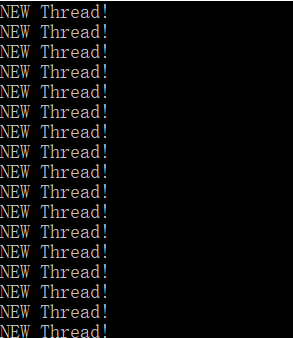
创建线程（std::thread)
C++11新标准引入了一个新的类std::thread，使用这个类可以将任意签名形式的函数作为线程函数。
1 |
|
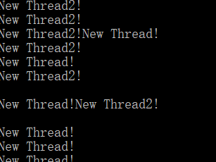
thread在运行间必须是有效的，因此在使用上也容易出错
1 |
|
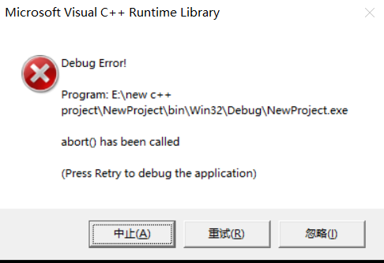
func()函数创建了一个线程，在func函数调用结束后，func中的局部变量t被销毁，但此时线程函数仍然在运行，使用在使用std::thread类时必须保证在运行时其线程对象有效。利用detach可以使线程对象与线程函数脱离关系。
1 | void func() |
在开发过程中，可能需要使用线程对象去控制和管理线程的运行和生命周期，因此代码应该尽量保证线程对象在线程运行期间有效，而不是单纯地调用detach方法使线程对象与线程函数的运行分离。
获取线程ID
在创建成功线程后，可以得到一个线程ID。线程ID是唯一的，因此可以拿来标识和区分线程。在Linux上调用pthread_self函数获取线程ID，在Windows上调用GeturrentThreadID函数获取。
1 | pthread_t pthread_self(void); |
pthread_t和DWORD 在本质上都是32位无符号整型。
- Linux系统线程ID的本质
方法1：调用pthread_create函数时通过第一个参数可以得到线程ID：
1 |
|
方法2：在需要获取ID的线程中调用pthread_self函数获取
1 |
|
方法3：通过系统调用获取线程ID
1 |
|
方法一和方法二获取线程ID的结果是一样的，都是pthread_t类型，输出的是一块内存空间地址。由于不同的进程可能有同样地址的内存块，因此方法1方法2获取的线程ID可能不是全系统唯一的，一般是一个很大的数字。方法3获得的线程ID是全系统内唯一的，一般是个不太大的整数。
1 |
|
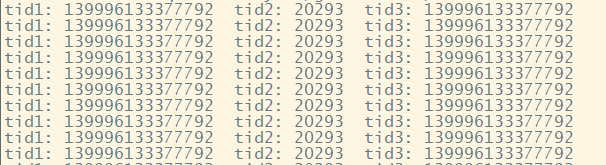
- C++11 获取当前线程ID的方法
C++11的线程库可以使用std::this_thread类的get_id获取当前线程ID
1 |
|
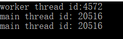
等待线程结束
- 在Linux下等待线程结束
//TODO 补充
- 在Windows下等待线程结束
1 |
|
- C++11等待线程结束
1 |
|
对象实例指针作为线程函数的参数
除了C++11线程库中的std::thread对函数签名没有特殊要求外，无论是Linux还是Windows的线程函数签名都必须是指定的格式。如果对线程函数进行封装，线程函数就不能是类的实例的方法，必须是类的静态方法。以Linux的线程函数签名为例：
1 | void* threadFunc(void* arg); |
将线程的基本功能封装到一个Thread类中，代码如下：
1 | class Thread |
threadFunc是一个类实例方法，编译器在编译时会把这些函数“翻译”成全局函数，即去掉类的域限制。为了保证类方法的正常功能，编译器在翻译时会将类的实例对象地址作为第一个参数传入。
1 | void* threadFunc(Thread* this, void* arg); |
这样的话不符合线程函数的签名要求，因此如果类方法作为线程函数，则只能是类的静态方法，不能是类的实例方法。C++11中的std::thread类就没有这个限制，但是必须显式地将线程函数所属的类对象实例指针和this指针传递给std::thread
1 |
|
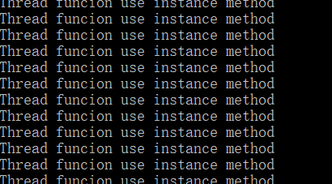
整型变量的原子操作
线程同步技术，指的是多个线程同时操作某个资源，为了防止一些资源的访问冲突，应该采取一系列的措施。最简单的资源类型就是整型变量。
原子操作与整型变量的赋值
- 给整型变量赋予一个确定的值
1 | int a = 1; |
这条指令一般是原子的，因为仅对应一条计算机指令，但是由于现代编译器的优化策略，当变量的值在编译期间可以被计算出来时，就很有可能被优化，凡是用到a的地方直接用常量1来替代。
- 变量自身增加或减去一个值
1 | a++; |
对应汇编有三条指令，首先将a对应的内存值移动到寄存器中，寄存器中的值自增1，再从寄存器移回来
- 把变量的值赋给另一个变量
对应汇编有2条指令，首先将变量b的值搬运到某个寄存器中，再从该寄存器中搬运变量a到内存中。
C++11对整型变量原子操作的支持
C++11提供了对整型变量原子操作的相关库，即std::atomic
1 | template<class T> |
Linux线程同步对象
Linux互斥体
Linux互斥体是通过多个线程同时执行某段代码来保护资源的。Linux互斥体在NPTL（Native POSIX Thread LIbrary中实现。在NPTL中使用数据结构pthread_mutex_t表示一个互斥体对象，并且可以使用以下两种方式初始化互斥体对象。
1 |
|
互斥体初始化函数如下:
1 | int pthread_mutex_init(pthread_mutex_* restrict mutex, |
当不需要一个互斥体对象时，可以使用pthread_mutex_destroy 函数销毁它，pthread_mutex_destroy签名如下：
1 | int pthread_mutex_destroy(pthread_mutex_t* mutex); |
在Linux上编译以上代码并执行:
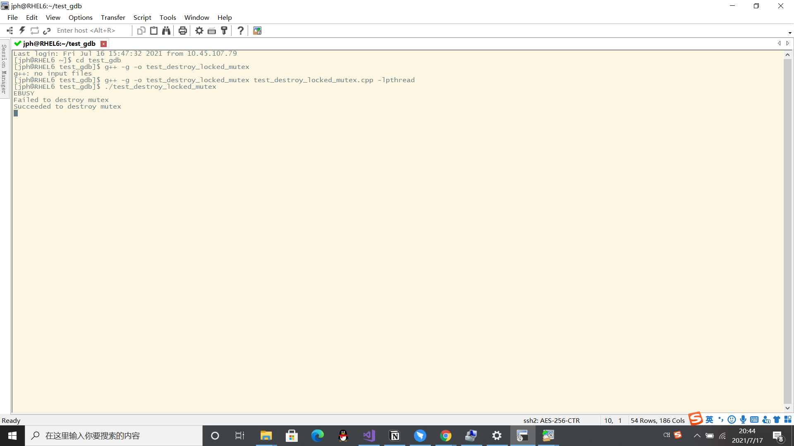
在开发过程中，应创建互斥体对象后再对其加锁，加锁后才对其进行解锁操作，解锁后才进行销毁操作，那么编码时一般不用考虑pthread_mutex_init/pthread_mutex_destroy/pthread_mutex_lock/pread_mutex_unlock等函数的返回值。
对于互斥体的加锁和解锁，一般用以下三个函数：
1 | int pthread_mutex_lock(pthread_mutex_t* mutex); |
设置互斥体对象的属性时需要创建一个pthread_mutexattr_t类型的对象，并用pthread_mutexattr_init函数初始化它，最后用pthread_mutexattr_destroy销毁它。
1 | int pthread_mutexattr_init(pthread_mutexattr_t* attr); |
使用pthread_mutexattr_settype/pthread_mutexattr_gettype 设置或或得想要的属性类型
1 | int pthread_mutexattr_settype(pthread_mutexattr_t* attr, int type); |
- PTHREAD_MUTEX_NORMAL(普通锁)
互斥体对象的默认属性，即pthread_mutex_init函数的第2个参数设置为NULL的取值。在一个进程对一个普通锁加锁以后，其他线程会阻塞在pthread_mutex_lock调用处直到对互斥体加锁的线程释放了锁。
1 |
|
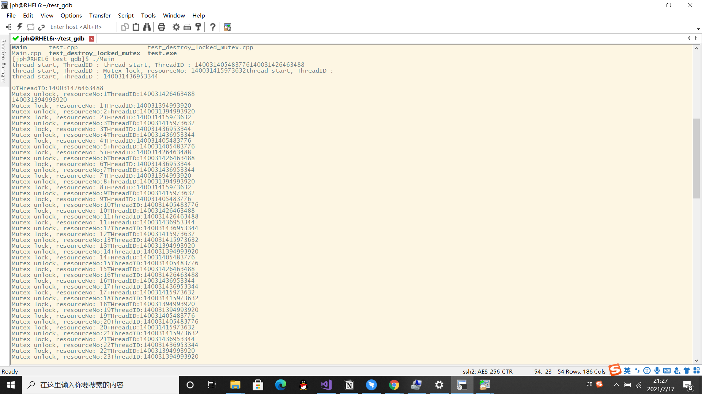
代码创建了5个线程，由于使用了互斥体保护资源resourceNo，所以pthread_mutex_lock与pthread_mutex_unlock之间的输出每次都是连续的，一个线程完成了这个工作后其他线程才有获得执行这段代码的机会，在一个线程拿到锁之后，其他线程会阻塞在pthread_mutex_lock处。
如果对一个已经加锁的普通锁再次使用了pthread_mutex_lock加锁那么程序会阻塞在第2次调用pthread_mutex_lock代码处
1 |
|
利用gdb做如下调试
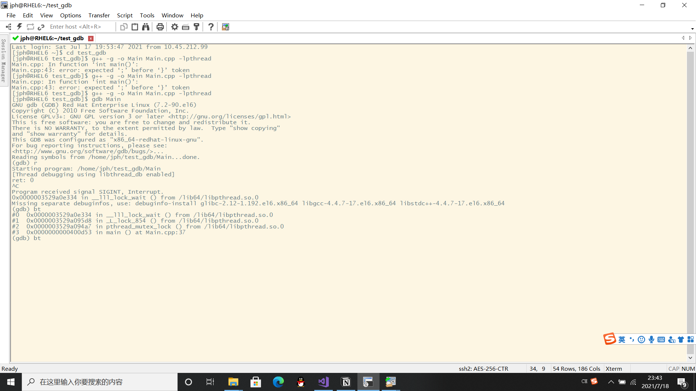
程序只运行了一行并且使用bt指令发现确实阻塞在第2个pthread_mutex_lock函数调用处，pthread_mutex_trylock函数如果拿不到锁，则也不会阻塞，而是会返回EBUSY错误码。
- PTHREAD_MUTEX_ERRORCHECK（检错锁）
1 |
|
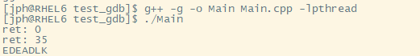
当前线程利用pthread_mutex_lock对已加锁的互斥体对象再次加锁则pthread_mutex_lock会返回EDEADLK
1 |
|
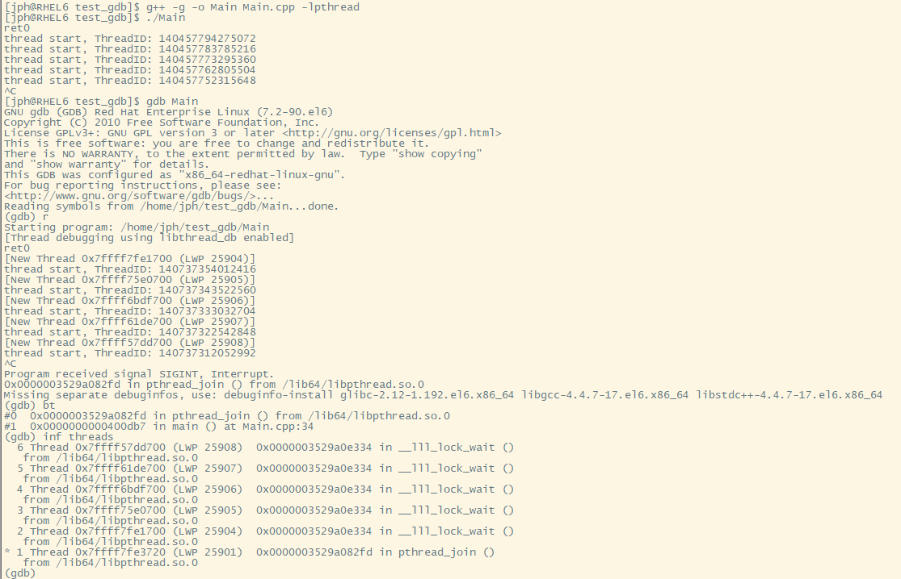
一个线程对某个互斥体加锁，其他线程再次对该互斥体加锁，gdb运行后发现没有输出，中断后发现线程均被阻塞在pthread_mutex_lock调用处。
- PTHREAD_MUTEX_RECURSIVE(可重入锁)
PTHREAD_MUTEX_RECURSIVE允许同一线程对其持有的互斥体重复加锁，每次成功调用pthread_mutex_lock一次，该互斥体对象的锁引用就会增加1，每次成功调用pthread_mutex_unlock一次，锁引用计数就会减1。当引用值为0时允许其他线程获得该锁，否则其他线程在执行pthread_mutex_lock时会被阻塞在pthreadmutex_lock处
Linux信号量
信号量代表一定的资源数量，可以根据当前资源数量按需唤醒指定数量的资源消费者线程，资源消费者线程一旦获取信息量，就会让资源减少对应的数量。Linux信号量常用的API如下
1 |
|
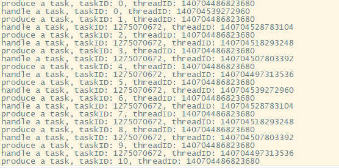
创建了一个生产者线程和5给个消费者线程，初始信号量计数为0表示一开始没有可执行任务，所以5个消费者线程均被阻塞在sem_wait调用处。接着生产者每隔1s产生1个任务，通过sem_post将资源计数增1唤醒其中一个线程。代码中的互斥体是为了保护队列tasks，因为多个线程会同时读写它。信息量有sem_wait和sem_post加锁和解锁。
Linux条件变量
- 条件变量的基本使用逻辑

利用条件等待机制可以高效完成：某个线程A在条件不满足的情况下主动让出互斥体，让其他线程操作，线程A等待条件满足；条件满足后，线程A被立即唤醒。
- 条件变量与互斥体对象
条件变量与互斥体要结合使用
1 | //m的类型是pthread_mutex_t,并且已经初始化,cv是条件变量 |
假设线程A执行完pthread_mutex_unlock(&m)后CPU时间片被剥夺，此时另一个线程B获得该互斥体对象m，发送条件信号，等线程A重新获得时间片后，由于该信号已经被错过，可能会导致线程A在cond_wait(&cv)无线阻塞。因此条件变量应与互斥体结合。
- 条件变量的使用
条件变量的API函数：
1 | int pthread_cond_init(pthread_cond_t* cond, const pthread_condattr_t* attr); |
等待条件变量被唤醒API函数
1 | int pthread_cond_wait(pthread_cond_t* restrict cond, pthread_mutex_t* restrict mutex); |
等待的线程可被以下API函数唤醒
1 | int pthread_cond_wait(pthread_cond_t* restrict cond, pthread_mutex_t* restrict mutex); |
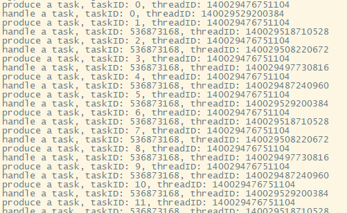
- 条件变量的虚假唤醒
在写条件变量代码时判断条件变量醒来应用while而不是if，因为操作系统可能在某些情况下唤醒条件变量，存在没有其他线程向条件变量发送信号，但等待此条件变量的线程有可能醒来的情形。因此将条件放在一个while循环中意味着光唤醒条件变量不行，还必须满足条件，程序才能继续执行正常的逻辑。
- 条件变量信号丢失
如果条件变量信号在产生时调用了pthread_cond_signal或pthread_cond_broadcast，没有相关线程调用pthread_cond_wait捕获该信号，该信号就会永久丢失，再次调用就会导致永久阻塞。
Linux读写锁
一般情况下线程只是读取共享变量的值，但如果要修改共享变量的值时，读请求之间无须同步，但是写请求时必须锁住读请求和其他写请求。
- 读写锁的应用方法
初始化和销毁API函数如下：
1 |
|
如果不需要动态创建或者设置非默认属性的读写锁对象也可以利用如下语句初始化
1 | pthread_rwlock_mt myrwlock = PTHREAD_RWLOCK_INITIALIZER; |
读锁API函数：
1 | int pthread_rwlock_rdlock(pthread_rwlock_t* rwlock); |
写锁API函数：
1 | int pthread_rwlock_wrlock(pthread_rwlock_t* rwlock); |
释放读锁或写锁API函数：
1 | int pthread_rwlock_unlock (pthread_rwlock_t* rwlock); |
- 读写锁的属性
pthread_rwlock_init的第二个参数可以设置读写锁的属性，pthread_rwlockattr_t。查询和修改读写锁的类型API函数：
1 |
|
读写锁属性对象初始化和销毁API函数：
1 | int pthread_rwlockattr_init(pthread_rwlockattr_t* attr); |
写着优先的读写锁代码片段：
1 | pthread_rwlockattr_t attr; |
- 读写锁实例
1 |
|
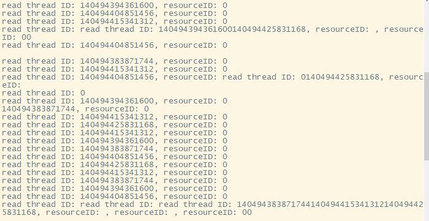
由于设置读写锁的属性是默认，即读锁线程优先获得锁，并且在读锁时会阻塞写锁线程，因此写锁线程很难获得锁。
修改读写锁属性为写优先：
1 |
|
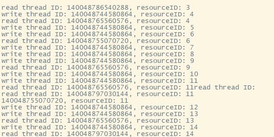
由于是写优先，可以看到wirte_thread明显增多
C++ 11/14/17线程同步对象
- std::mutex系列
1 |
|
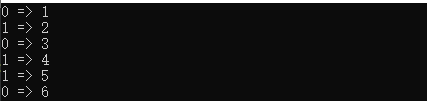
利用加锁解锁保护g_num
为了避免死锁std::mutex.lock和std::mutex::unlock方法需要成对使用。
确保创建的线程一定能运行
不仅需要判断线程创建函数是否调用成功，还要在线程函数中利用线程同步对象通知创建者线程是否创建成功。
1 |
|
创建一个新线程后会立即阻塞在一个条件变量上。工作线程成功运行起来，则会发送条件变量告知主线程。
1 |
|
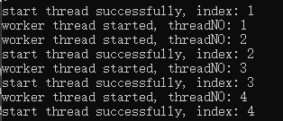
创建一组线程时逐个创建，成功运行一个新线程后再创建下一个线程。
多线程使用锁经验总结
- 减少锁的使用次数
加锁和解锁本身有一定的开销；临界区的代码不能并发执行；线程间对临界区的争夺太过激烈时，若线程竞争互斥体失败就会陷入阻塞并让出CPU。
- 明确锁的范围
1 | if (my_hashtable.is_empty()) |
代码对my_hashtable插入操作使用了锁进行保护，但判断my_hashtable是否为空也需要使用锁进行保护所以正确为：
1 | pthread_mutex_lock(&my_mutex); |
- 减少锁的使用粒度
尽量减少锁作用的临界区代码范围，临界区的代码范围越小，多个线程排队进入临界区的时间就会越短。
1 | void TaskPool::addTask(Task* task){ std::lock_guard < std::mutex> guard(m_mutexList); std::shared_ptr<Task> spTask; spTask.reset(task); m_taskList.push_back(spTask); m_cv.notify_one();} |
guard锁保护m_taskList，并且智能指针和唤醒线程没必要作为临界区的代码，修改如下：
1 | void TaskPool::addTask(Task* task) |
guard锁仅对m_taskList.push_back()操作做保护
1 | void EventLoop::doPendingFunctors() |
m_pendingFunctors是被锁保护的对象，类型为std::vector，必须等当前线程逐个处理完m_pendingFunctors中的元素后，其他线程才能操作m_pendingFunctors，修改如下：
1 | void EventLoop::doPendingFunctors() |
利用了局部变量localFunctors，把m_pendingFunctors中的内容换到了localFunctors中，这样就释放锁并允许其他线程操作m_pendingFunctiors。
线程池与队列系统的设计
线程池的设计原理
线程池是一组线程，在一些情况下需要异步执行一些任务，这些任务的产生和执行是存在于程序的整个生命周期内的。为了减少创建和销毁的开销，创建一组在程序生命周期内不会退出的线程是必要的，这些线程在拿到任务时运行，没有任务就处于阻塞或休眠状态。
一般来说，生命周期内产生的诸多的任务一般都被存放在队列中。队列的设计也是多种多样的，可以自由规定任务的读存方式或按照任务优先级等等方式进行队列的设计。
在队列的设计过程中，由于有非常多的线程都需要操作这个队列，所以一般来说需要对这个队列加锁。
1 | /** |